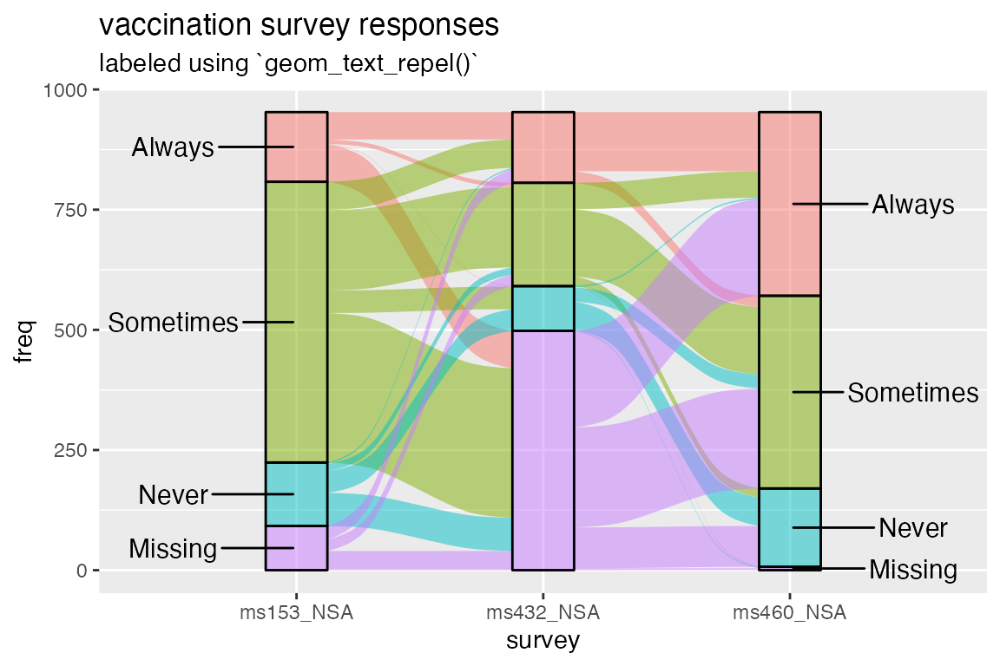

Labeling small strata
Jason Cory Brunson
2019-09-02
labels.rmdSetup
This brief vignette uses the vaccinations dataset included in ggalluvial. As in the technical introduction, the order of the levels is reversed to be more intuitive. Objects from other ggplot2 extensions are accessed via :: and :::.
## Loading required package: ggplot2Problem
The issue on the table: Strata are most helpful when they’re overlaid with text labels. Yet the strata often vary in height, and the labels in length, to such a degree that fitting the text inside the strata at a uniform size renders them illegible. In principle, the user could treat size as a variable aesthetic and manually fit text to strata, but this is cumbersome, and doesn’t help anyway in cases where large text is needed.
To illustrate the problem, check out the diagram below. It’s by no means an egregious case, but it’ll do. (For a more practical example, see this question on StackOverflow, which prompted this vignette.)
ggplot(vaccinations,
aes(x = survey, stratum = response, alluvium = subject, y = freq,
fill = response, label = response)) +
scale_x_discrete(expand = c(.1, 0)) +
geom_flow(width = 1/4) +
geom_stratum(alpha = .5, width = 1/4) +
geom_text(stat = "stratum", size = 4) +
theme(legend.position = "none") +
ggtitle("vaccination survey responses", "labeled using `geom_text()`")
Fix
One option is to simply omit those labels that don’t fit within their strata. In response to an issue, v0.9.2 includes parameters in stat_stratum() to exclude strata outside a specified height range; while few would use this to omit the rectangles themselves, it can be used in tandem with geom_text() to shirk this problem, at least when the labels are concise:
ggplot(vaccinations,
aes(x = survey, stratum = response, alluvium = subject, y = freq,
fill = response, label = response)) +
scale_x_discrete(expand = c(.1, 0)) +
geom_flow(width = 1/4) +
geom_stratum(alpha = .5, width = 1/4) +
geom_text(stat = "stratum", size = 4, min.height = 100) +
theme(legend.position = "none") +
ggtitle(
"vaccination survey responses",
"labeled using `geom_text()` with `min.height = 100`"
)
This is a useful fix for some cases. Still, if the goal is a publication-ready graphic, then it reaffirms the need for more adaptable and elegant solutions. Fortunately, two wonderful packages deliver with, shall we say, flowing colors.
Solutions
Two ggplot2 extensions are well-suited to this problem: ggrepel and ggfittext. They provide new geom layers that use the output of existing stat layers to situate text: ggrepel::geom_text_repel() takes the same aesthetics as ggplot2::geom_text(), namely x, y, and label. In contrast, ggfittext::geom_fit_text() only specifically requires label but also needs enough information to determine the rectangle that will contain the text. This can be encoded as xmin and xmax or as x and width for the horizontal direction, and as ymin and ymax or as y and height for the vertical direction. Conveniently, ggalluvial::stat_stratum() produces more than enough information for both geoms, including x, xmin, xmax, and their vertical counterparts.
All this can be gleaned from the ggproto objects that construct the layers:
## [1] "x" "y" "label"## [1] "label"## <ggproto method>
## <Wrapper function>
## function (...)
## f(...)
##
## <Inner function (f)>
## function (data, params)
## {
## if ("width" %in% names(data)) {
## warning("`width` is now an argument, not an aesthetic, and will be removed in a future version")
## }
## if ("height" %in% names(data)) {
## warning("`height` is now an argument, not an aesthetic, and will be removed in a future version")
## }
## if (!(("xmin" %in% names(data) & "xmax" %in% names(data)) |
## ("x" %in% names(data)))) {
## stop("geom_fit_text needs either 'xmin' and 'xmax', or 'x'",
## .call = FALSE)
## }
## if (!("ymin" %in% names(data) & "ymax" %in% names(data) |
## "y" %in% names(data))) {
## stop("geom_fit_text needs either 'ymin' and 'ymax', or 'y'",
## .call = FALSE)
## }
## if (is.null(data$xmin) & is.null(data$xmax) & class(params$width) !=
## "unit") {
## data$xmin <- data$x - params$width/2
## data$xmax <- data$x + params$width/2
## }
## if (is.null(data$ymin) & is.null(data$ymax) & class(params$height) !=
## "unit") {
## data$ymin <- data$y - params$height/2
## data$ymax <- data$y + params$height/2
## }
## data
## }## <ggproto method>
## <Wrapper function>
## function (...)
## f(..., self = self)
##
## <Inner function (f)>
## function (self, data, scales, decreasing = NA, reverse = TRUE,
## discern = FALSE, label.strata = FALSE, min.height = NULL,
## max.height = NULL)
## {
## if (label.strata) {
## if (is.null(data$label)) {
## data$label <- data$stratum
## }
## else {
## warning("Aesthetic `label` is specified, ", "so parameter `label.strata` will be ignored.")
## }
## }
## data <- subset(data, y != 0)
## data <- auto_aggregate(data = data, by = c("x", "stratum"))
## data <- if (is.na(decreasing)) {
## arr_fun <- if (reverse)
## dplyr::desc
## else identity
## data[with(data, order(PANEL, x, arr_fun(stratum))), ,
## drop = FALSE]
## }
## else {
## arr_fun <- if (decreasing)
## dplyr::desc
## else identity
## data[with(data, order(PANEL, x, arr_fun(y))), , drop = FALSE]
## }
## data$ycum <- NA
## for (xx in unique(data$x)) {
## ww <- which(data$x == xx)
## data$ycum[ww] <- cumsum(data$y[ww]) - data$y[ww]/2
## }
## data <- transform(data, ymin = ycum - y/2, ymax = ycum +
## y/2, y = ycum)
## data$ycum <- NULL
## if (!is.null(min.height)) {
## data <- data[data$ymax - data$ymin >= min.height, , drop = FALSE]
## }
## if (!is.null(max.height)) {
## data <- data[data$ymax - data$ymin <= max.height, , drop = FALSE]
## }
## data
## }I reached the specific solutions through trial and error. They may not be the best tricks for most cases, but they demonstrate what these packages can do. For many more examples, see the respective package vignettes: for ggrepel, and for ggfittext.
Solution 1: ggrepel
ggrepel is most often (in my experience) used to repel text away from symbols in a scatterplot, in whatever directions prevent them from overlapping the symbols and each other. In this case, however, it makes much more sense to align them vertically a fixed horizontal distance (nudge_x) away from the strata and repel them vertically from each other (direction = "y") just enough to print them without overlap. It takes an extra bit of effort to render text only for the strata at the first (or at the last) axis, but the result is worth it.
ggplot(vaccinations,
aes(x = survey, stratum = response, alluvium = subject, y = freq,
fill = response)) +
scale_x_discrete(expand = c(.4, 0)) +
geom_flow(width = 1/4) +
geom_stratum(alpha = .5, width = 1/4) +
scale_linetype_manual(values = c("blank", "solid")) +
ggrepel::geom_text_repel(
aes(label = ifelse(as.numeric(survey) == 1, as.character(response), NA)),
stat = "stratum", size = 4, direction = "y", nudge_x = -.5
) +
ggrepel::geom_text_repel(
aes(label = ifelse(as.numeric(survey) == 3, as.character(response), NA)),
stat = "stratum", size = 4, direction = "y", nudge_x = .5
) +
theme(legend.position = "none") +
ggtitle("vaccination survey responses", "labeled using `geom_text_repel()`")## Warning: Removed 8 rows containing missing values (geom_text_repel).
## Warning: Removed 8 rows containing missing values (geom_text_repel).
Solution 2: ggfittext
ggfittext is simplicity itself: The strata are just rectangles, so no more parameter specifications are necessary to fit the text into them. One key parameter is min.size, which defaults to 4 and controls how small the text is allowed to get without being omitted.
ggplot(vaccinations,
aes(x = survey, stratum = response, alluvium = subject, y = freq,
fill = response, label = response)) +
scale_x_discrete(expand = c(.1, 0)) +
geom_flow(width = 1/4) +
geom_stratum(alpha = .5, width = 1/4) +
ggfittext::geom_fit_text(stat = "stratum", width = 1/4, min.size = 3) +
theme(legend.position = "none") +
ggtitle("vaccination survey responses", "labeled using `geom_fit_text()`")
Note that this solution requires ggfittext v0.6.0.
Appendix
## ─ Session info ──────────────────────────────────────────────────────────
## setting value
## version R version 3.3.3 (2017-03-06)
## os macOS 10.13.6
## system x86_64, darwin13.4.0
## ui X11
## language (EN)
## collate en_US.UTF-8
## ctype en_US.UTF-8
## tz <NA>
## date 2019-09-02
##
## ─ Packages ──────────────────────────────────────────────────────────────
## package * version date lib
## assertthat 0.2.1 2019-03-21 [1]
## backports 1.1.4 2019-04-10 [1]
## cli 1.1.0 2019-03-19 [1]
## colorspace 1.4-1 2019-03-18 [1]
## commonmark 1.7 2018-12-01 [1]
## crayon 1.3.4 2017-09-16 [1]
## desc 1.2.0 2018-05-01 [1]
## digest 0.6.20 2019-07-04 [1]
## dplyr 0.8.3 2019-07-04 [1]
## evaluate 0.13 2019-02-12 [1]
## fs 1.2.7 2019-03-19 [1]
## ggalluvial * 0.9.2.0001 2019-09-02 [1]
## ggfittext 0.6.0 2018-07-06 [1]
## ggplot2 * 3.2.1 2019-08-10 [1]
## ggrepel 0.8.1 2019-05-07 [1]
## glue 1.3.1 2019-03-12 [1]
## gtable 0.3.0 2019-03-25 [1]
## htmltools 0.3.6 2017-04-28 [1]
## knitr 1.22 2019-03-08 [1]
## labeling 0.3 2014-08-23 [1]
## lazyeval 0.2.2 2019-03-15 [1]
## lifecycle 0.1.0 2019-08-01 [1]
## magrittr 1.5 2014-11-22 [1]
## MASS 7.3-45 2016-04-21 [1]
## memoise 1.1.0 2017-04-21 [1]
## munsell 0.5.0 2018-06-12 [1]
## pillar 1.4.2 2019-06-29 [1]
## pkgconfig 2.0.2 2018-08-16 [1]
## pkgdown 1.3.0 2018-12-07 [1]
## plyr 1.8.4 2016-06-08 [1]
## purrr 0.3.2 2019-03-15 [1]
## R6 2.4.0 2019-02-14 [1]
## Rcpp 1.0.2 2019-07-25 [1]
## rlang 0.4.0 2019-06-25 [1]
## rmarkdown 1.12 2019-03-14 [1]
## roxygen2 6.1.1 2018-11-07 [1]
## rprojroot 1.3-2 2018-01-03 [1]
## scales 1.0.0 2018-08-09 [1]
## sessioninfo 1.1.1 2018-11-05 [1]
## stringi 1.4.3 2019-03-12 [1]
## stringr 1.4.0 2019-02-10 [1]
## tibble 2.1.3 2019-06-06 [1]
## tidyr 0.8.99.9000 2019-08-31 [1]
## tidyselect 0.2.5 2018-10-11 [1]
## vctrs 0.2.0 2019-07-05 [1]
## withr 2.1.2 2018-06-23 [1]
## xfun 0.5 2019-02-20 [1]
## xml2 1.2.0 2018-01-24 [1]
## yaml 2.2.0 2018-07-25 [1]
## zeallot 0.1.0 2018-01-28 [1]
## source
## CRAN (R 3.3.2)
## CRAN (R 3.3.2)
## CRAN (R 3.3.2)
## CRAN (R 3.3.2)
## CRAN (R 3.3.2)
## CRAN (R 3.3.2)
## CRAN (R 3.3.2)
## CRAN (R 3.3.3)
## CRAN (R 3.3.3)
## CRAN (R 3.3.2)
## CRAN (R 3.3.2)
## Github (corybrunson/ggalluvial@e087455)
## CRAN (R 3.3.2)
## CRAN (R 3.3.3)
## CRAN (R 3.3.2)
## CRAN (R 3.3.2)
## CRAN (R 3.3.2)
## CRAN (R 3.3.2)
## CRAN (R 3.3.2)
## CRAN (R 3.3.0)
## CRAN (R 3.3.2)
## CRAN (R 3.3.3)
## CRAN (R 3.3.0)
## CRAN (R 3.3.3)
## CRAN (R 3.3.2)
## CRAN (R 3.3.2)
## CRAN (R 3.3.3)
## CRAN (R 3.3.2)
## CRAN (R 3.3.2)
## CRAN (R 3.3.0)
## CRAN (R 3.3.2)
## CRAN (R 3.3.2)
## CRAN (R 3.3.3)
## CRAN (R 3.3.3)
## CRAN (R 3.3.2)
## CRAN (R 3.3.2)
## CRAN (R 3.3.2)
## CRAN (R 3.3.2)
## CRAN (R 3.3.2)
## CRAN (R 3.3.2)
## CRAN (R 3.3.2)
## CRAN (R 3.3.3)
## Github (tidyverse/tidyr@8b89cef)
## CRAN (R 3.3.2)
## CRAN (R 3.3.3)
## Github (jimhester/withr@dbcd7cd)
## CRAN (R 3.3.2)
## CRAN (R 3.3.2)
## CRAN (R 3.3.2)
## CRAN (R 3.3.2)
##
## [1] /Library/Frameworks/R.framework/Versions/3.3/Resources/library